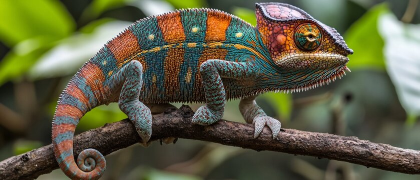

Espèce Endémique à Madagascar
Joyaux évolutifs de l'île rouge

Caméléon Panthère (Furcifer pardalis)
Espèce la plus colorée, capable de changer de teinte en quelques secondes...
- Le caméléon panthère (Furcifer pardalis) est une espèce endémique de Madagascar, vivant dans les forêts tropicales et subtropicales de cette île unique.
- Sa taille remarquable peut atteindre 50 centimètres de long, ce qui en fait l'un des plus grands caméléons de son genre.
- Sa capacité de changement de couleur est bien plus complexe qu'un simple camouflage : elle exprime ses émotions, son état physiologique, sa température corporelle et sert de communication.
- Chasseur redoutable, il possède une langue télescopique capable de s'étendre sur deux fois la longueur de son corps, lui permettant de capturer ses proies avec une précision extraordinaire.
- Ses yeux indépendants peuvent regarder simultanément dans deux directions différentes, lui offrant un avantage de prédation et de survie unique dans son écosystème.